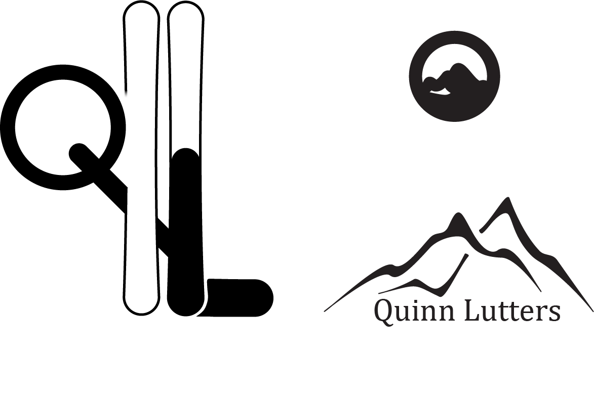

Logos are really important for a brand, because your logo is the image of your brand, brands like McDonald’s and apple are notorious for their logo. When I started to sketch my logo I immediately had some ideas, some good some, I wanted to include my name or initials in some way and I wanted to have some link with skiing, since skiing is a big part of my life. After doing some ore sketching I didn’t like my first prototype and I decided to go into a different direction with mountain outlines, which can be quite tricky to get right. Since this was my first time using illustrator I started of by making some tutorials in order to get to know illustrator. Then I started to make multiple iterations of my prototypes and tried some different things with each of them, either adding something, like the trees that I added, but they were too much (less is more) or trying to simplify the logo to try to clean it up. I eventually settled on making a mountain outline for my logo, which is even more tricky in illustrator. I used the pen tool to make the outline and after fiddling around a lot with each corner and changes the radiuses and the length of each part, I had something that looked good. I added my name on the bottom of the logo, which I had my doubts about and therefore I decided to drop it in the end. I am still working on other iterations of my logo using the mountain outline idea, but making it a bit smaller so I can choose between two different logos depending on the use case.
